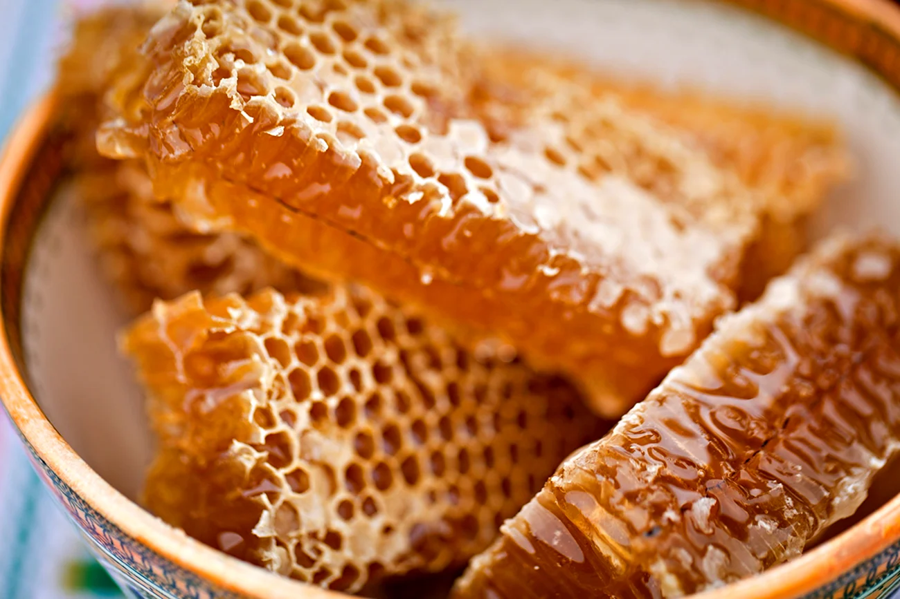

Мед — это натуральный продукт, который обладает множеством полезных свойств. Он используется не только как сладкое лакомство, но и как лекарственное средство. Наш мед собирается в экологически чистых районах, что гарантирует его высокое качество.
Мы предлагаем широкий ассортимент меда, который подойдет для любого случая. Наш мед проходит строгий контроль качества, чтобы вы могли наслаждаться его вкусом и пользой. У нас вы найдете мед из липы, сосны, клевера и одуванчика.
| Тип | Цена | Наличие |
|---|---|---|
| Липовый | 20$ за литр | 10 тонн |
| Сосновый | 30$ за литр | 7 тонн |
| Клеверный | 40$ за литр | 5 тонн |
| Одуванчиковый | 50$ за литр | 1 тонна |
Мед обладает антибактериальными, противовирусными и противовоспалительными свойствами. Он помогает укрепить иммунитет, улучшает пищеварение и способствует заживлению ран. Регулярное употребление меда помогает поддерживать здоровье и бодрость.
Чтобы заказать мед, свяжитесь с нами по телефону или через форму на сайте. Мы доставляем мед по всей стране, гарантируя свежесть и качество продукта. Вы также можете посетить наш магазин и лично убедиться в качестве нашего меда.
Мы работаем с 2010 года и за это время заслужили доверие тысяч клиентов. Наш мед — это не просто продукт, это часть нашей жизни и забота о вашем здоровье.